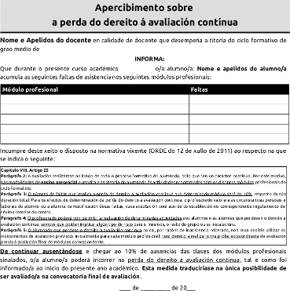
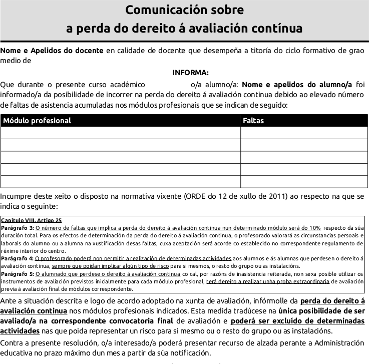
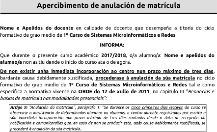
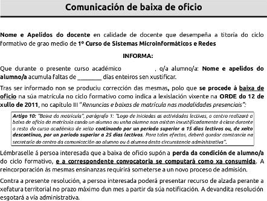

“Errare humanum est, sed perseverare diabolicum”Se atopas erros ¡avisáme por correo! AVISO: ESTA DOCUMENTACIÓN NON ESTÁ ACTUALIZADA
En caso de erro, prevalecerá a normativa ou regulamento do centro
↓
Cumplir todos estes requisitos:
http://www.edu.xunta.es/fp/fpbasica
↓
Cumprir alomenos un dos seguintes requisitos:
↓
Cumprir alomenos un dos seguintes requisitos:
↓
Para prácticas FCT, se traballaches antes:
http://www.todofp.es/sobre-fp/formacion-en-centros-de-trabajo/como-conseguir-exencion-fct.htmlPara módulos, consultar normativa (en secretaría informan)
Estou a estudar un ciclo en réxime presencial (ordinario ou modular) ¿qué ocorre se falto?
Non son ausencias xustificables:
Por experiencias de cursos pasados, non admito oíntes
↓
O alumnado que perdese o dereito á avaliación continua nun determinado módulo terá dereito a unha proba final extraordinaria previa á avaliación final de módulos correspondente, de acordo co establecido no artigo 25.5 da Orde do 12 de xullo de 2011
Unha soa proba e sen recuperación (pode ter varias partes: teoría e práctica).
En ciclos (FP) non hai setembro (salvo na FP Básica)
É un aviso previo (ao 6%)
Xa non ten remedio
Os menores en idade de escolarización obrigatoria, non poden causar baixa (pero si traslado de expediente ou cambio de estudos).
En caso de absentismo escolar, o centro debe avisar aos servizos sociais do concello e a inspección. Nalgúns casos pode intervir a fiscalía de menores por temas de custodia.
As ausencias xustifícanse en documento médico oficial. Os pais só poden xustificar dous días de faltas no curso.
A Consellería ten un protocolo específico a seguir nestes casos e se cita aos pais a reunión.
Tampouco perden a avaliación contínua, pero deben rematar igual os traballos e aprobar as avaliacións parciais para que este beneficio lles sirva de algo.
Nos ciclos presenciais: ordinarios e modulares, dase de baixa ao alumno en calquera destes casos:
Pódense ter en conta as circunstancias persoais e familiares do alumno (hospitalizacións, etc). Hai que falar co/a titor/a neste caso.
É un aviso previo (neste exemplo é o aviso dunha anulación)
Xa non ten remedio, pero se estás nalgunha situación especial, fala co/a titor/a (exemplo de baixa que corre convocatoria)
Consiste en que se deixa de ser alumno e non corre convocatoria.
↓
Ponte en contacto co teu titor/a e coméntalle sempre a túa situación persoal ou familiar, sobre todo se che vai afectar aos estudos. Por exemplo:
Aínda que presentaras papeis nalgún curso pasado, non temos acceso.
Pode que necesitemos contactarte.
¿Puxeches datos actualizados na matrícula?
Se non te lembras, escribe nunha folla o teu nome, apelidos, teléfono, dirección e email e dallo ao teu titor/a.
↓
Hai outros casos permitidos, pero entran con menor prioridade
↓
Permanencia
Máximo repetir unha vez (1+1) cun curso adicional de gracia (1+1+1) se o departamento de orientación o propón (casos excepcionais).
Titulación obtida
Certificado profesional básico. Ao acabar pódese obter o título da ESO (RD 5/2016). So por proposta dos docentes que impartiron clase.
Acceso
A calquer ciclo de grao medio co título de FP Básica (ou co da ESO de obterse). Hai criterios de preferencia de non haber prazas para todos:
www.edu.xunta.es/fp/webfm_send/7199Organización
Primeiro curso:
Hai 3 avaliacións. Convocatoria de Xuño, convocatoria de final de Xuño (asimiladas coma unha) e extraordinaria de setembro.
Segundo curso:
En primeiro:
En segundo:
↓
Requisitos de acceso (chega con un):
Modalidades (depende da oferta do centro):
Permanencia:
Titulación obtida:
Acceso
Organización
Primeiro curso
Segundo curso
Promoción
De primeiro a segundo:
Se os módulos suspensos non superan as 300 horas en cómputo total. Tense en conta a duración teórica (decreto de currículum).
De segundo a FCT:
Ter superados todos os módulos.
FCT:
↓
Requisitos de acceso (chega con un):
Modalidades (depende da oferta do centro):
www.todofp.es/sobre-fp/informacion-general/sistema-educativo-fp/como-accedo.html
Permanencia
Titulación obtida
Acceso
Organización
Primeiro curso
Segundo curso
Promoción
De primeiro a segundo:
En segundo, para facer FCT:
Prácticas FCT (Formación en Centros de Traballo):
Faise simultáneamente coas prácticas FCT.
Máis información:
www.todofp.es/sobre-fp/modulo-profesional-proyecto/que-es-modulo-profesional-proyecto.htmlOferta actual: Ciclos medios e superiores
www.edu.xunta.es/fp/admision-fpdualOutras webs de interese
Ataca
¿preguntas?